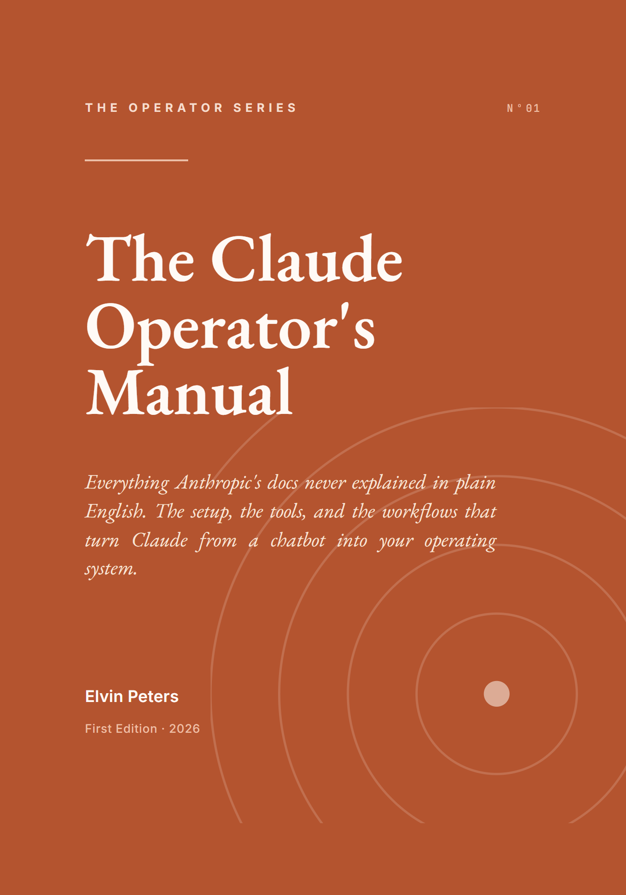

Two hundred and seventeen pages that turn Claude from a chat box into an operating system for your work. Download it now, and keep it somewhere you will actually reach for it.
Download the PDFFour parts, nineteen chapters, and seven reference appendices, all in one designed volume. Here is the shape of it.
The Claude apps end to end, no terminal required: the surfaces, prompting that lands, Projects, Skills, and connecting your tools.
The mental model everything rests on: tokens, context, statelessness, and how software talks to Claude through the API.
The operator's power tools: memory, permissions, plan mode, commands, skills, hooks, subagents, MCP, and worktrees.
End-to-end workflows you can copy, the day-one setup checklist, and the habits that keep you sharp as the tools move.
One honest note. Claude moves fast. This manual teaches the durable mental models and points you to the official docs for the specifics that change between releases. It is dated on purpose. Treat the concepts as permanent and the exact flags as perishable, and it will serve you for a long time.
Go set it up. The difference between chatting with Claude and operating it is entirely on the other side of this book.
— Elvin Peters